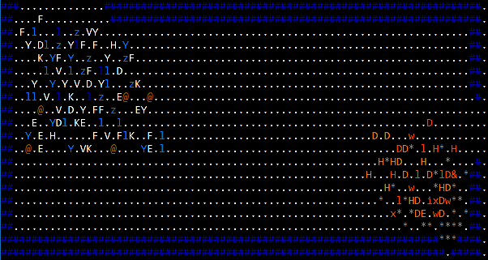
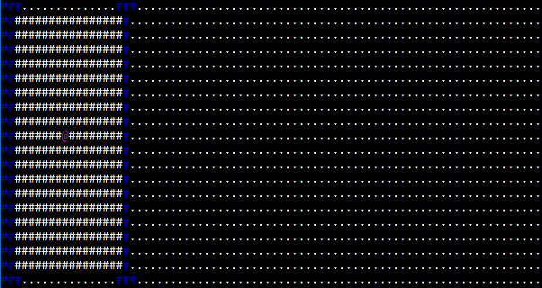
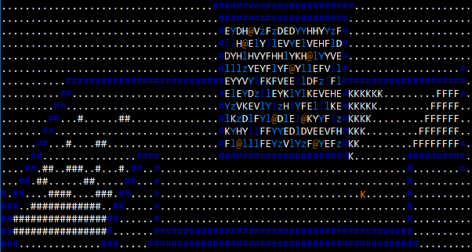
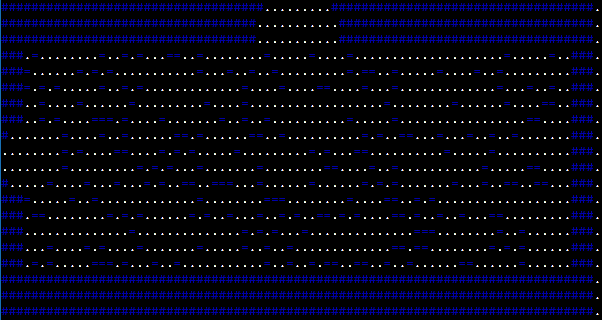
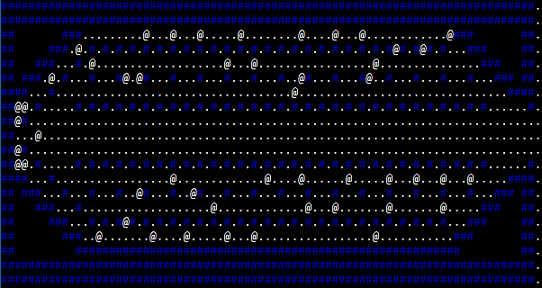

Improved ADOM Guidebook
Previous - TOC - Next
IC: 1 - IC: 2 - ICD - IC: 3 - IC: 4 - Chaos Diplomat - IC: 5 -
IC: 6 - IC: 7 - IC: 8 - Throne Room - Ice Queen - Quests
Ice Queen Domain
Credit ADOM Wiki – Ice Queen Domain,
Ice Queen,
Ice Queen's quests,
Chaos Diplomat,
Kill the Ice Queen.
The Ice Queen Domain is a ten-level area located to the west of the Tower of Eternal Flames. The shorthand name of it is IC.
It can be accessed by any PC of experience level 15 or more. There are seemingly no other requirements.
Throughout the whole location the following effects are active:
- Fire failure: Most of the fire-based attacks available to the PC and monsters do not work properly. This includes Burning Hands,
Fire Bolt, Fireball and Improved Fireball spells, wands of fire, wands of fireballs, crystals of fire, and the explosion
from dipping a scroll of corruption removal into a potion of raw chaos. Monsters with fire-breath attacks (such as various
red dragons and fire elementals) may attempt to use them to no avail (with a corresponding message about the monster in
question being very surprised at such outcome). Fire vortices are unable to explode, and will use melee attacks. However,
fireballs from offensive Alchemy and the Chaos Orb of Elemental Fire still work.
- No teleportation: Teleportation through any means is suppressed (except the Dungeon level).
- Slower movement: The base energy cost for movement over snowy ground and ice is 1390. This cost is reduced by 10 for every two points of
Strength above 1, up until 79 Strength, where the penalty is eliminated. An amulet of free action brings the base cost for
movement down to 1000, regardless of Strength.
- Cold damage: The temperature on all levels is very low, dealing damage to any monsters which are not cold-resistant. Once the PC kills
20 of the domain's inhabitants (the fire monsters on IC:3, the Chaos Diplomat on IC:4, all of the monsters on IC:5, the prisoners
on IC:7, and all of the monsters on ICD do not count towards the limit), the cold will worsen and begin to deal cold-based damage
to the PC and their items made out of cold-vulnerable materials, including scrolls, potions, books, gems, wands of door creation,
and amulets of light. Only one such item can be destroyed per turn.
- No monster generation: There is no random monster generation (except the Dungeon level) and predetermined monsters are scaled to experience level. It is prudent
to visit the levels as early as possible to avoid fighting extremely experienced monsters.
- Drakeling's Speed penalties: Drakelings exploring this location will have their speed reduced by 50. Unlike D: 49, the speed penalty does not get
progressively worse with time spent in the level. However, killing 20 domain's inhabitants will worsen the cold and lead to a 150 speed penalty (with 10 speed limit).
Unlike with usual dungeons the levels in the Ice Queen Domain normally are not connected with the stairs and instead the PC has to cross each level
to the other side in order to reach the next one. Some levels have multiple open borders which typically lead directly to the wilderness and can be used as shortcuts.
However, the architecture of the levels is straightforward enough for the player to identify the right path.
The following creatures can be found in the Ice Queen Domain: frozen ones z, ice vortices V, ice statues Y, ice elementals E,
ice lizards l, frost salamanders l, snow golems Y, yetis F, berserkers @, invisible stalkers @, white baby dragons D,
white dragons D, cavemen @.


2.22.1 Moat House Area (IC: 1)
The first level features the entrance to the Ice Queen's castle. The entrance is guarded by two hostile snow golems Y who have interesting
feature of respawning every time the PC enters the location. Destroying the bridge tiles where they show up using a pick axe or staff of minor volcano summoning prevents this.
They are relatively tough but can be dealt with missiles and magic; as killing them gives a nice amount of experience (comparable to the rewards for killing steel golems), some
players consider them as an easy farming target, although such tactic has consequences – it contributes to the increase in freezing damage.
The level then features a long corridor to the western side of the map. The two big halls behind the doors on the north and south
sides are packed with ice statues. Each hall has a door on its west side, leading to a small treasure chamber. Each spot within
these chambers contains several hundreds of gold pieces and often a valuable piece of equipment, such as an artifact.

2.22.2 Small Court (IC: 2)
The second level contains no monsters and features a large empty corridor (with an opening in the western part filled with traps)
connecting east and west side and two hidden pathways. Only the upper pathway is accessible – its entrance can be found by
searching for a secret passage. This pathway leads to a down staircase to the Dungeon. By traversing the Dungeon
and surfacing trough its second staircase the PC can reach the second secret pathway of IC:2. It can be accessed without going through the Dungeon
by using a wand of destruction. The second pathway ends with a dead end and a stack of items useful for the Tower of Eternal Flames
(or the Tomb of the High Kings) – a ring of fire resistance = and a wand of cold \.
Using a wand of trap detection, staff of sensing traps, or Detect Traps skill is highly advised to traverse the trapped area as it contains nasty
ceiling traps (instead of teleportation traps) which may inflict heavy item destruction.

2.22.2.1 Dungeon (ICD)
The dungeon level is the only location within the Ice Queen Domain that is generated randomly. Likewise, it may feature random monsters
aside from the usual ice inhabitants. It has been noted by multiple players that a small number of out-of-depth monsters (like balors, wyrms, and
quickling queens) seems to be a guaranteed feature of the Dungeon level. All of the monsters on this level are enraged, immune to Calm
Monster, and generated at a higher level than normal.
The Dungeon features two up staircases, both of which lead to the IC:2 level described above. Aside from that and severe
freezing effects (that target the PC and other random monsters in this place up to the point of killing them outright),
this level seems to behave like any normal dungeon level. The Dungeon level generally contains no dungeon features.
Unlike the surface levels, teleportation is allowed in the Dungeon.
2.22.3 Training Grounds (IC: 3)
When the PC reaches the third level she will stumble right in a battle between an army of fire and an army of ice.
The ice army consists of the usual inhabitants of the Ice Queen Domain and starts in the northwestern corner far
from player. They are initially peaceful to the player. The army of fire consists of red dragons, fire giants,
fire giant kings, fire elementals, and fire grues, and starts in the southeastern corner near the player. The fire army is
standing on the heaps of rocks, presumably after the monsters have just broken through walls. Note that the
PC can exit through the south of the level where the army of fire presumably entered; doing so will lead
directly to the wilderness. Despite the fact that fire warriors are hostile to the player they initially
ignore her and rush to attack the ice army. Fire monsters are generated enraged which make them very
dangerous to fight (especially fire giant kings and fire grues).
Usually the ice army ends up victorious (the outcome is heavily dependent on how efficient ice vortices are in
taking out fire creatures) and will wander around the level oblivious to the PC. However, picking up any items
will instantly anger ice creatures in the vicinity of the PC and prompt them to attack.
In a rare case when the fire army ends up victorious (the fight can be tilted in team fire's favor by targeting the ice vortices
with missile attacks, at the cost of some alignment) they will immediately turn on the PC. Due to the open design
of the level, restricted teleportation and enraged status, the fight can be extremely dangerous. Luckily,
no creatures in the fire army see through invisibility. If the PC is invisible, there is no need to actually
fight the fire creatures; eventually, they will all freeze to death due to the environment, at which point the
level will be empty and all the loot can be safely picked up without fear of retaliation.

2.22.4 Grand Hallway (IC: 4)
The fourth level features a single square frozen lake at the center of which stands an enchained Chaos Diplomat.
The ice on the lake is sturdier than normal ice bridges and will hold up to 3000 stones of weight. Due to the
design of the level PCs without the Swimming skill can end up in a very dangerous situation if they fail
to assess the location right away. It is thus recommended to use sources of Water breathing intrinsic or
drop items in a safe location (IC:3 is a bad choice for it as picking up items dropped by the PC will nevertheless
enrage the remains of the ice army). If a reliable way of levitating over the ice is available, it's the easiest way
to get across without worrying about the weight limit.

2.22.4.1 Chaos Diplomat @

| Level: 2, DV: 40, PV: 0, Hits: 90, Attacks: 4, Damage: 2d8+12, Speed: 180. |
The Chaos Diplomat stands enchained on a single square frozen lake at the center of IC: 4.
When talked to, he will give a quest to kill the Ice Queen. The quest is given regardless of alignment, although he will complain if the PC is lawful.
After completing his quest, the Chaos Diplomat will reward the PC by granting them one or two corruptions, as well as a pile of items:
- worm-ridden adamantium chain mail of chaos named "Wormskin"
- cloak of defense
- flaming eternium scimitar of corruption named "Spite"
- hateful eternium scimitar of mayhem named "Terror"
- adamantium boots
- fireproof blanket
- potion of extra healing
- 3 potions of exchange
Of these, "Terror" is easily the most desirable, with very impressive typical damage stats of 4d8+15 (with an extra bonus of 2d6 if the PC is fighting berserk). The fireproof blanket is also handy
before the Tower of Eternal Flames if the PC could not get one from Thrundarr or elsewhere.
One of the Ice Queen's quests is to dispose of the Chaos Diplomat. He is extremely fast, attacks several times per turn, and his attacks always bypass PV, making him extremely deadly in melee.
Hitting him with a thrown potion of cure corruption can instantly kill him, and even failing that, it takes away his armor-punching ability. This will incur an alignment drop unless he is angered
by other means first. Other ranged attacks can also be used to take care of him safely. The nature of the Ice Queen levels allows the PC to freely gain distance by switching levels and then
entering from the opposite side. He ignores water, so simply breaking/melting the ice around him does not prevent him from pursuing the PC.
2.22.5 Inner Courtyard (IC: 5)
The fifth level continues with several tiles of frozen water (thus necessary precautions should be taken) and features a large zigzag-like corridor. The eastern part contains a number of berserkers
and yetis (which are blocking the path to the next level). If the PC is invisible both berserkers and yetis can be avoided entirely by switching places with them (although the monster which was
displaced will be able to track the PC).

2.22.5.1 Berserker Prince K
| Level: 1, DV: 20, PV: 0, Hits: 112, Attacks: 3, Damage: 2d8+5, Speed: 100. |
On the east side of the level there is a hostile named berserker prince who will shout insults at the PC and immediately charge at the PC. After a number of turns, he will unlock the southern
wall releasing 200 monsters from the secret room. The monsters released are of high danger, including ice vortices and ancient white dragons and considering the open-spaced type of the level and
inability to teleport may be lethal to some PCs. If the prince is killed quickly (invisibility helps with this immensely, as then he doesn't notice the PC until he is attacked), the trap can be
avoided entirely. The player can return to this level later when they are ready and unlock the wall with wand of destruction.
2.22.6 Frozen Garden (IC: 6)
The sixth level features a forest filled with yetis. The yetis are neutral by default and do not move but will attack the PC should she come closer to them. Trees in the forest can be chopped down
seemingly without consequences.

2.22.7 Prison Section (IC: 7)
The seventh level has two features – a guaranteed forge & and a number of prison cells. Room doors (but not the prison cell doors) are guarded by ice statues which are, however,
oblivious to the PC and any actions she undertakes. The forge is located in the room in the southeastern corner. The prison occupies the top part of the map and consists of 1x1 cells.
Every cell is located behind a locked, but never trapped door. Most of the cells contains only bones, but some contain living monsters. When the PC releases them, some will be grateful for
that and join her as companions but most will try to kill the PC before fleeing. Players should be cautious as monsters of very high danger level such as unicorns and werewolf kings
can be generated. The entrance to the next level is on the southern side.

2.22.8 Grand Antechamber (IC: 8)
The 8th level is a large open space similar to the Big Room. As the in-game description implies, there are multiple hot springs located throughout the level (along with water tiles). Combined
with freezing temperatures of the Ice Queen Domain hot springs create a unique environmental effect – constant powerful wind gusts that have the ability to blow out your helmet and
any item equipped in hands as well as a chance to throw the PC one tile in random direction. Characters without Swimming and water protection will suffer all negative effects
if they are thrown on a water tile.
There are no monsters on the level and no other features except the multiple water tiles. The winds make the prior level a good place to make use of the Crown of Science for spellbook-reading
purposes, as no resources will need to be spent to remove it. The entrance to the next level is on the western side.

2.22.9 Throne Room (ICT)
The final level is the main hall featuring the Ice Queen herself and lots of invisible stalkers. The Ice Queen will give non-chaotic characters her three quests which, like Thrundarr's, are given
and must be completed in sequence.
Note that the invisible stalkers will fight against anyone who threatens the Ice Queen; the PC may rid of all of these before the battle with the Ice Queen without actually making her hostile.
They may be attacked without consequences (besides alignment drop). Attacking one will not make the others or the Ice Queen herself hostile. The alignment drop can be negated by shooting past
the stalker itself.

2.22.9.1 Ice Queen @
| Level: 1, DV: 40, PV: 10, Hits: 530, Attacks: 1, Damage: 1d20+20, Speed: 110. |
The Ice Queen rules over her domain in the west side of the Drakalor Chain.
The Chaos Diplomat will ask the PC to kill the Ice Queen. She is a tough opponent, possessing a lot of hit points and being able to quickly regenerate. She is also somewhat dangerous in melee since
she has a paralyzing attack that is more powerful than those used by master mimics, though at least she is not as fast as them. Her arsenal of spells include summoning snow golems
and ice statues, confusion, cursing the PC or their items, and a Cone of cold spell (though the PC should already be adequately prepared for the latter). Note that fire spells
cannot be used on her due to the nature of her environment, and she is immune to cold (as might be obvious). Killing her removes the icy spell that damages the PC and her inventory from the domain.
The Ice Queen is apparently the estranged wife of Yggaz, or so the fool himself claims. He will complain about her the first few times he is chatted with, giving clue to the player
about her location, and will also mention her amongst his other babblings.
2.22.9.2 Ice Queen quests
The Ice Queen provides 3 quests, each of which involves vanquishing a follower of Chaos, to PCs of lawful or neutral alignments. She will not speak with chaotic PCs, except to request that they
repent their ways.
- Kill Haggar
Haggar is found in the Frost Giant Jarl Caves (see next chapter). The caves will not appear until this quest is taken. PCs taking on this quest will not only have worry about defeating Haggar,
who is a very strong opponent, but also the hazardous path to facing him since the caves contain powerful frost giant berserkers as well as other quite high DL monsters.
Rewards: 4 potions of cure corruption, temporary blessing.
- Kill the Chaos Diplomat
Chaos Diplomat is found in the fourth level of Ice Queen's chambers. Note that if you kill him before receiving the quest, you won't get the rewards.
Rewards: +2 Strength, +2 Willpower, +2 Toughness.
- Kill Hotzenplotz
Note that this is exactly the same as a quest that Tywat Pare gives out, with the same reward.
Reward: amulet of order.
2.22.9.3 After the quests
If all three quests have been completed, Chatting with the Ice Queen produces the message "There will be more for you to do... come back at a later point." However, as of ADOM 3.3.3,
there is no other quest given by her.
Updated September 9th, 2019